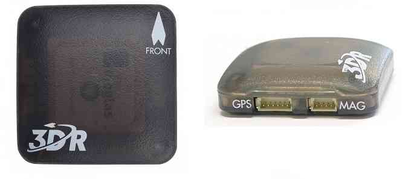

构建多旋翼你需要什么¶
本文概述了构建基于Copter的多旋翼时所需的主要组件。
多旋翼机包括电机、ESC和螺旋桨¶
有许多机架、ESCs和电机可供选择。您可能会考虑的一些部件在选择一款多旋翼机型和载具构建详细说明中进行了讨论。
还支持包括传统直升机在内的许多其他设计和配置。
6+通道RC发射器和接收器¶
您需要一个无线电控制发射机来手动控制您的Copter并激活其飞行模式。您可以使用任何至少有六个通道的RC发射器/接收器系统。兼容RC发射机和接收机系统中讨论了一些选项。

自动驾驶仪（自动驾驶仪硬件）¶
Copter的自动驾驶板决定了其自主飞行的能力。有关列表，请参阅ArduPilot兼容自动驾驶仪页面。建议使用具有以下功能的自动驾驶仪：
一张SD卡，用于日志记录、地形数据库、脚本编写（如果需要）
所用电机和伺服装置数量的足够输出
如果需要，为GPS和遥测无线电提供足够数量的UART
振动隔离IMU是非常理想的，简化了安装注意事项。
确保自动驾驶仪包括气压计
I2C用于外部指南针
提示
许多自动驾驶仪都有内部指南针，但为了避免电机干扰，有时需要外部指南针。
创建无人机视觉应用程序的开发人员应考虑使用单独的Companion计算机或基于Linux的自动驾驶板。
GPS模块¶
您的Copter将需要GPS模块。推荐的模块是3DR UBlox GPS+指南针模块，其中还包括一个指南针。您可以在这里查看其他GPS解决方案。
{kind=link}
锂电池和充电器¶

Copter需要可充电的锂聚合物（LiPo）电池。一个好的经验法则是每个电机使用1000毫安时（毫安时）。对于四旋翼直升机来说，像这样的4000mAH锂电池会很好地工作。虽然你的直升机一次只能使用一个电池，但我们建议至少有两个电池库存；电池越多，飞行时间就越多。你还需要一个充电站来给你的电池充电，比如这个。
地面控制站¶
如果您要将新版本的Copter加载到自动驾驶仪上，并进行首次飞行调整和校准，则需要（免费和开源）Mission Planner。它在PC上运行，也可以用于规划任务。

配置好Copter后，您可能会发现选择不同的地面站更方便——在您选择的平板电脑、手机或电脑上运行。主要选项在主题选择地面站中进行了讨论。
遥测无线电(数传)¶
遥测无线电允许您的Copter使用MAVLink协议从空中与地面站通信。这使您能够实时与任务交互，并从直升机的摄像头和其他组件接收流式数据。这为您的任务增加了相当大的便利！
我们推荐从遥测登录页链接的遥测无线电解决方案。请记住，如果使用SIK数传，您将需要所在国家/地区允许频率的版本-915 MHz（美洲）和433 MHz（欧洲）。